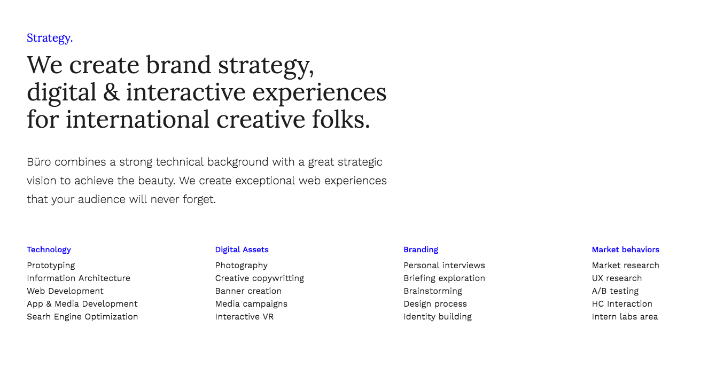
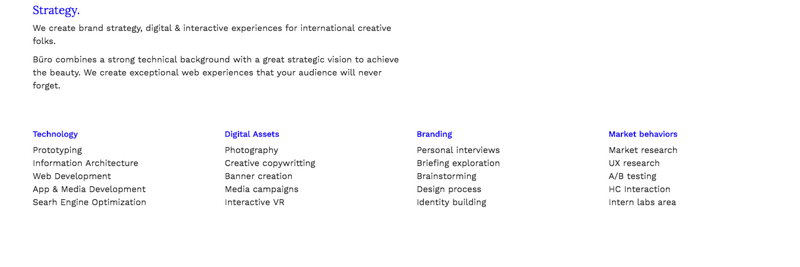
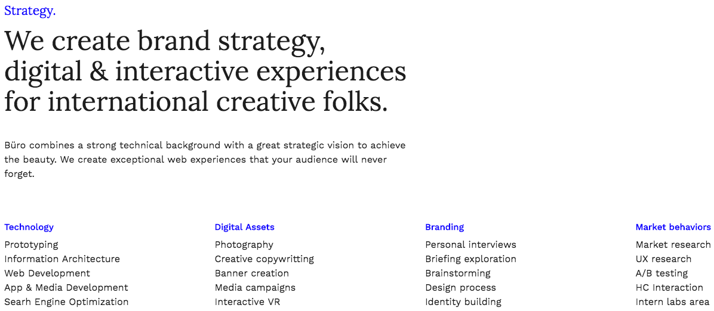
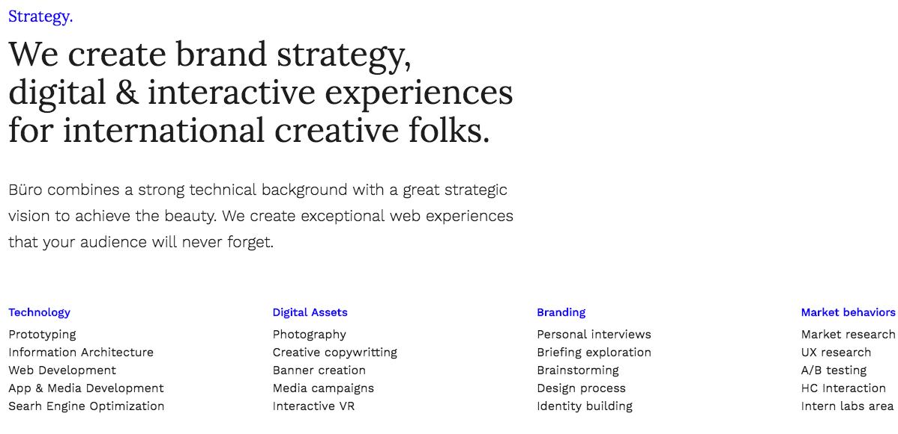
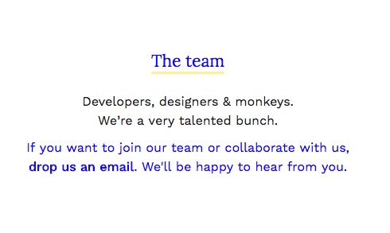
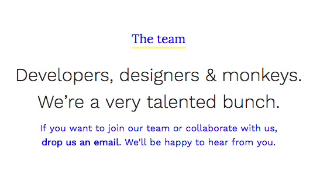
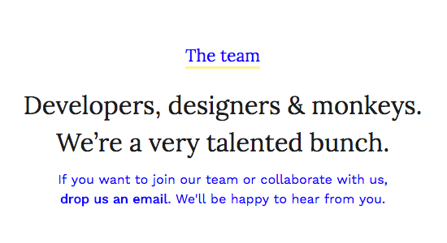
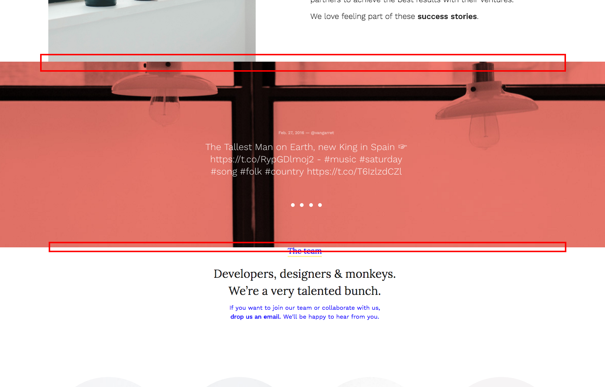
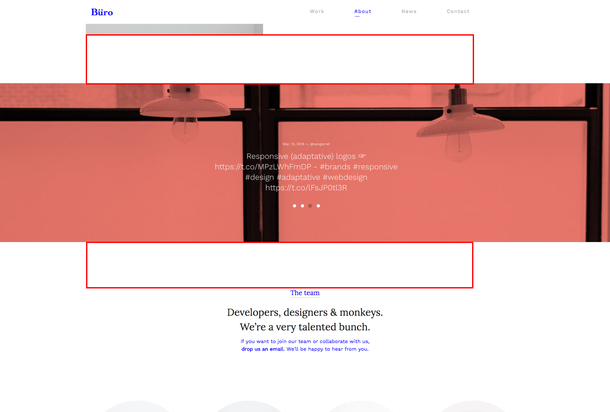

Büro Premium Minimal HTML5
Author: VanKarWai
Live Preview: View Demo
Support: Ask a Question
Knowledge Base: Read FAQ's
This file will help you to start working with your new Premium HTML5 Template. First steps installing, guides to create your own pages, portfolio views or any other feature included.
If you have any doubt about some detail explained in this guide or any other, just create a support ticket. We will try to help you as better as possible. Support Forum →
Notice
Please, before asking for help, make sure you are using the last template version.
The first we must talk about is how to work with any HTML5 template.
Requirements
This is not mandatory, but we deeply encourage you to work in your local machine with MAMP and Codekit, if you work with Mac, WAMP (Windows) or XAMPP (Linux). These tools are basic in order to have a work toolset for your local machine. Mostly they are mandatory when working with PHP files.
If you never tried before these tools, Youtube is full of videos about how to set up such environments. No worries, it is really easy.
If you don´t want to install nothing, you just need to open index.html with your favorite browser and start editing any template file with your prefered code editor, it´s that easy :)
The best will be to choose a folder in your machine to start editing your files. Preferably, as we talked previously, add your site folder into your local server installation (MAMP, Codekit...). Although you can work in any folder in your machine.
You will need a code editor in order to customize and add you own contents. In this sense I deeply suggest you to use Sublime Text. You have many different options in the market, but this one, in my opinion, is the best for newbies & advanced users.
Basically you just need to edit the files with your preferred code editor.
In order to work with the content presentation, you can add different classes to help you to modify and style better your titles and contents in general. In the next steps we are covering the different choices you have for this.
As you know, Büro is a bootstrap HTML5 template, so you will have access to the most part of the features included with the framework
This is the most important part of the theme in order to create your own layouts in a very easy way. Bootstrap provides a very powerful and flexible grid system that will help you to place your contents as you could need. Bootstrap provides a powerful responsive & fluid grid system that appropriately scales up to 12 columns as the device or viewport size increases.
In this sense, the best will be to direct you to the official docs in order to have an accurated detail about how the grid works. You can check this out, here.
Basically you need to have clear the difference between .container class, .row class and the different .col-* classes.
Some short brief would be creating first a container wrapper that it will include different rows depending on your design and inside this rows you will place columns depending again on your design in mind. The container wrapper can be a 'fluid' one that will adapt to the whole screen available width.
Anyways, do not worry if it is your first time with Bootstrap. It is one of the most popular frameworks for some reason, so you wil be creating your own layouts in minutes. Also, you have all the code modularized ∓ commented with the template in order to re-use it as you could need. Take it as guide or just replace the contents if you like the layouts used as demostration. Anyways, you have tons of guides in internet about how to work with Bootstrap and you always can drive us a mail or open a support ticket in case that you could have any related doubt, we´ll help you with anything (remind that we don´t provide customizations).
Aside the powerful grid system provided by Bootstrap, the template includes some helper classes that you can add to your markup in order to achieve many different results.
You can add some classes to the body element in order to achieve some things to work different.
index.html: line 129 -> class="js-ajax-holder projects cols-2"
As you can see here, it is really easy to modify.
You can modify the look for some typogrpahy elements with just a single class. Let´s see:
This just looks like this in the code
<h4>Strategy.</h4>
So if you want to highlight this title, just add the class in this way:
<h4 class="highlight">Strategy.</h4>
This is the result:
This just looks like this in the code:
<div class="row mar-btm-sm"> <div class="col-sm-6"> <h4 class="highlight">Strategy.</h4> <p>We create brand strategy, digital & interactive experiences for international creative folks.</p> <p>Büro combines a strong technical background with a great strategic vision to achieve the beauty. We create exceptional web experiences that your audience will never forget.</p> </div> </div>
As you can see, this is regular text and actually this just look like this:
Let´s add now the claim class and let´s see what happens:
<p class="claim">We create brand strategy, digital & interactive experiences for international creative folks.</p>
<p>Büro combines a strong technical background with a great strategic vision to achieve the beauty. We create exceptional web experiences that your audience will never forget.</p>
Add the class like this:
<p class="text-bigger">Büro combines a strong technical background with a great strategic vision to achieve the beauty. We create exceptional web experiences that your audience will never forget.</p>
This results in:
<p>Developers, designers & monkeys.
We’re a very talented bunch.</p>
Let´s add the class:
<p class="text-middle">Developers, designers & monkeys.
We’re a very talented bunch.</p>
<p class="text-middle alt-font mar-top-xs">Developers, designers & monkeys.
We’re a very talented bunch.</p>
<h4 class="highlight underline">The team</h4>
The template provides a very easy way to add margins between your block contents. You will be able to add different margins depending on your needs.
These classes are divided in two groups. The one to control the top margins in an element and the ones for controling the bottom margins. Having this into account:
The same in case of the bottom margins:
Having this into account, you would be adding your own contents and modules and you would see this without the classes:
As you can see, no margins are applied by default, because you can control this much better with the classes with already have seen. This will give you a more accurted result to your design. And the best part is that it is responsive as well.
You can do this in many ways, but the easier one would be adding the classes to the twitter feed in this case. Now the markup is like this:
<div class="slider-module cnt-slider">
Thus, if we add the classes like this:
<div class="slider-module cnt-slider mar-top-lg mar-btm-lg">
We are adding a 'large' top margin and a large bottom margin. So now we have this :)
You can create a compose your forms as you could need just creating the layout with bootstrap classes in a very easy way. Everything is styled and you don´t need to do much more. You just need to configure your mail inbox, where you will receive the mails from your website and the inbox for the newsletter subscribers. Also, you can custom the form process texts.
To do this, you just need to open, within php folder the files form-process.php for the main form and newsletter-process.php in case of the form related to the newsletter area. Inside you will see how to adapt these files to your needs, it is very easy.
In this section we are learning where add or remove social networks to share in.
This options are only available within single-project.html file and the blog pages. In these pages the option will be available and when the user clicks on the 'share' button, the social networks you have added will appear.
For example, if you open single-project.html, you will see around the line 227 a 'module code' with the tag 'social modal box'. As you can see, each list element is one of the available social networks. Twitter, Facebook, Pinterest, Google Plus and mail sharing. You can remove any if you want it here.
As Büro is a plain HTML5 template, any change you do in your heading options, you will need to update it in every file in your site, as you know. You can use the find and replace feature in your preferred code editor in order to make this process is breath instead of going to each file, open, change, save & close.
This is the markup for the logo:
<div class="logo"> <a href="index.html"><img src="images/logo.png" class="img-responsive" width="161" height="35" alt="Büro — design atelier"></a> </div>
Basically you don´t need to do very much. Just add your logo path to the src attribute, in case the name is different and it is located in a different path, of course. If you are naming to your logo 'logo.png' and you have save it into the images folder, you don´t need to modify nothing here. Just remind to modify/adapt the width & height values to your logo. Also, you can add an alt text to your logo as well.
You can set up your main navigation here. Basically you must have into account some few details in order to create your navigation
<a href="index.html" data-title="Work" data-subtitle="Latest projects">Work</a>
<li class="active"> <a href="index.html" data-title="Work" data-subtitle="Latest projects">Work</a>
<a href="index.html" data-title="Work" data-subtitle="Latest projects">Work</a>
<a href="index.html" data-title="Work" data-subtitle="Latest projects">Work</a>
<li class="active"> <a href="index.html" data-title="Work" data-subtitle="Latest projects">Work</a> <ul class="dropdown-menu" role="menu"> <li><a href="index-col-01.html" title="Portfolio page with 1 column project grid">1 Columns</a></li> <li><a href="index.html" title="Portfolio page with 2 columns project grid">2 Columns</a></li> <li><a href="index-col-03.html" title="Portfolio page with 3 columns project grid">3 Columns</a></li> <li><a href="index-alt.html" title="Portfolio right sided heading">Alt heading</a></li> </ul> </li>
Anyways, do not worry if it is your first time writing HTML, because you have all the code writen in the files, so you will have them as a guideline. It is very easy.
The footer is created again on the bootstrap grid basis. Just check the code in order to understand how it was built.
Here you will find some social icons. As you can see in the markup the 'i' tag has a different class depending on the social network. Here are the different options you can add as class:
These are the different options you have in order to add your social networks icons.
Also you will need to add the link to your social network. To do this is that easy as adding your link replacing the current '#' in the href attribute in your anchor, in this way:
<li><a href="//link-to-your-network.com"><i class="icon-twitter"></i></a></li>
You can add a Twitter feed within any page. New Twitter API requires oAuth Token Key, so it's two step process
First, you need consumer and consumer secret keys. Get them from dev.twitter.com/apps.
Edit api/config.php file and replace variables with your Consumer and oAuth Keys.
// Consumer Key
define('CONSUMER_KEY', 'CONSUMER_KEY_HERE');
define('CONSUMER_SECRET', 'CONSUMER_SECRET_HERE');
// User Access Token
define('ACCESS_TOKEN', 'ACCESS_TOKEN_HERE');
define('ACCESS_SECRET', 'ACCESS_SECRET_HERE');
Your twitter feed is ready to start serving your tweets just by adding the code that you can find in about.html or about-agency.html files. Just copy and paste and play with the Bootstrap grid to fit your preferences.
In order to share your contents in social networks like Facebook, Twitter or Google Plus, you must have into account that those services use some 'methodology'. Basically you will be using a protocol that enables to any website to become a rich object in a social graph. What does mean? Simply you are adding some markup to let to those social networks know how to display your contents in their own services. Let´s see how this does work.
The most used protocol for these functionalities is Open Graph, created by Facebook in 2010. This protocol (using its HTML markup placed at the head/top part of your HTML document), just allows to Facebook, Twitter & Google Plus to know what kind of contents they will share from your page once anybody share the link in the social networks or when a user will click the options within your page.
Twitter uses its own protocol, they call to this 'cards'. But basically it works in the same way that in case of Facebook.
This is very simple, let´s see an example from inside Buro. The exemple is from the file - single-project-assistant.html
<!-- Twitter Cards --> <meta name="twitter:card" content="summary_large_image" /> <meta name="twitter:site" content="@usernamehere" /> <meta name="twitter:creator" content="@usernamehere" /> <!-- Open Graph | Facebook and Google Plus --> <meta property="og:title" content="Büro - Minimalist HTML5 Premium Portfolio Template for Studios & Agencies"> <meta property="og:url" content="https://heythemers.com/templates/buro/buro-google/index.html"> <meta property="og:description" content="Büro is a unique minimalist Premium HTML5 Template for creative agencies and freelances"> <meta property="og:image" content="https://image-tf.s3.envato.com/files/194471742/screenshots/00-buro-cover-tf.__large_preview.png"> <meta property="og:image:width" content="600"> <meta property="og:image:height" content="315"> <meta property="og:type" content="website">
Basically, you don´t need to modify too much in case of Twitter Cards, because Twitter gets data from Open Graph too, so you just need to specify how the content will display once it will be shared. In this case is set to display the large cover image. Also you can add your 'site' & 'creator' data.
The most important part is related to Open Graph. Here you must to specify different details. Let´s review them one by one:
In any case, here you can see more details about Twitter cards, and here you can see more details about Facebook Open Graph.
Just have into account that you will need to modify this for each page in order to provide the best data for social networks to work propertly.
You can customize many different details about the template with some few modifications. We are talking now about the best methods to add your own styles and how to optimize your load timings.
The main template style file is style.css, this file is within the css folder.
This file contains all the look and feel related styles and it is the responsible for the colors, typefaces, margins, spaces... Within each page head you´ll find the next related links (the main style sheets)
<!-- Main styles --> <link rel="stylesheet" href="css/bootstrap.css"> <link rel="stylesheet" href="css/style.css">
As you can see, aside the main one, the template loads another style sheet for all the bootstrap dependencies like grids and components.
If you want to change something, for example, you want to modify the highlight color, you can do this in style.css. The whole code is well commented and you can easilly find where you must do such modifications. You will see how elements are first grouped in order to define the typeface assignment and the color scheme. Between lines 250 and 390 you have all these rules ready for you to change.
When editing templates or WP themes is not recommended to modify the core/main files, because if you do your modifications directly in style.css and you update the template in the future, you will loose all your modifications because this file will be overwritten. So, how do you should do this?
Well, you have many different approaches to this, but the more common should be creating a new css file. Something like this:
<link rel="stylesheet" href="css/bootstrap.css"> <link rel="stylesheet" href="css/style.css"> <link rel="stylesheet" href="css/custom-styles.css">
As you can see, a new css line has been added. In this file you would add you own custom rules. You can copy and paste from the original file all the rules you could need and then add your own values. Or directly create your own.
The best tool to help you editing the template when you want to modify some particular element and you want to know which styles are involved there, it´s Chrome and the Chrome Developers Tools. This toolset will allow you to inspect any web page in order to find all the styles involved, among other important details.
Thus using this tool you will find quickly any element values and you can easilly modify them in the dev tools, add your own values and then copy and paste this new rule definition into your custom style sheet, it´s that easy.
When uploading your files to your server you should optimize the way they load. This will turn your site faster and faster likes to users and Google.
As we saw before, you must include in the head all the styles involved, something like this:
<link rel="stylesheet" href="css/bootstrap.css"> <link rel="stylesheet" href="css/style.css"> <link rel="stylesheet" href="css/custom-styles.css">
This is good as organization and modularity, it´s great to have control over your code but this is not optimized. The first you should do is to compress each file, for this, just copy and paste your file code in a service like this one.
This will generate a compressed file that you can use in the same way. This method just removes spaces and other unuseful characters.
This will turn your code in something like this:
<link rel="stylesheet" href="css/bootstrap-min.css"> <link rel="stylesheet" href="css/style-min.css"> <link rel="stylesheet" href="css/custom-styles-min.css">
You can rename each compresed file to something like *-min.css.
With this you have compressed and reduced the files size. This will do your site load faster but you can improve a little bit more by reducing server request. To achieve this just add all your compressed css files in a unique one. You should respect the order, because if you add your custom styles before the main styles, they won´t take effect in your site. Always respect the cascade. So at the end instead of the different style sheets you would have just one containing all the compressed code related to each one, in the same order as you had them at the beggining.
<link rel="stylesheet" href="css/your-custom-minified-ultra-optimized-styles-min.css">
Now you have your CSS ready. It´s time to pay attention to the javascript files.
They are placed at the bottom and they look like this:
<!-- Main scripts --> <script src="js/vendor/jquery.js"></script> <script src="js/main.js"></script> <script src="js/plugins.js"></script> <script src="js/bootstrap.js"></script>
Here you have all the javascript dependencies.
To optimize this is pretty the same that you did with the CSS files, you first compress the files and then you can fetch some of them. I recommend you to do this.
First compress each file, you can use this service. You should have this:
Once you have done this, you can include some file into another. For example, once you have them minified, you can add bootrstrap-min.js content at the end of the plugins-min.js. In this way you are saving another server request.
If you follow these tips and you optimize your images, your site will load faster and you will see huge improvements. Also, there are many things that you can do in your server in order to improve more your site loading times and general performance. Here you can find more tips to improve your site performance. Notice that some of them could need advanced web development skills.
Optimization
It is not mandatory to optimize your site, if you don´t want to do those steps, you just need to upload your site to your server and it will run normally. Optimization it´s just about improving user experience, save server resources and make happy users and search engines. At the end, you will be happier as well :) So go on!
You may not think that this is important, but if you want your site to display really fast you need to get a good hosting. This is the first step in having a fast site, which also translates into more views, which also translates into a better SEO, which finally translates into more sales.
There are three hosting companies which i recommend:
Always optimize/compress your jpeg images before uploading them to the server. Large images should be compressed at around 90% image quality and you should also try to limit the use of lossless image files (uncompressed pngs).
And a special big THANK YOU for those great artists and creatives that provide us with some of their amazing pieces to illustrate Büro HTML5 Bootstrap Premium Template.